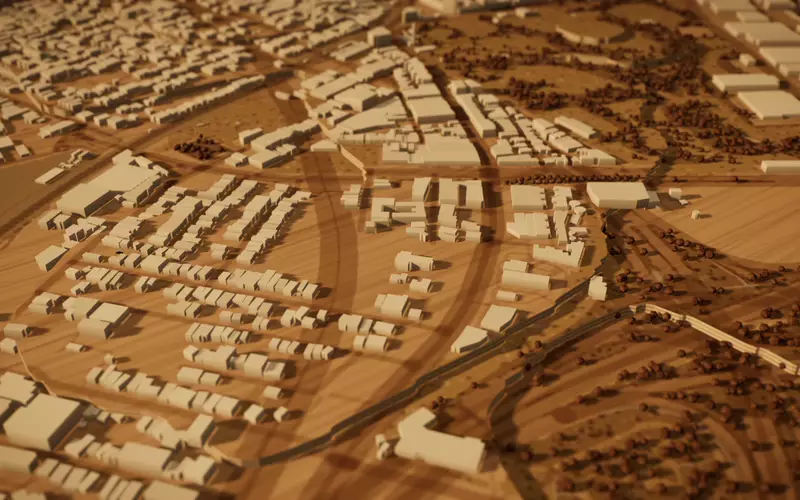
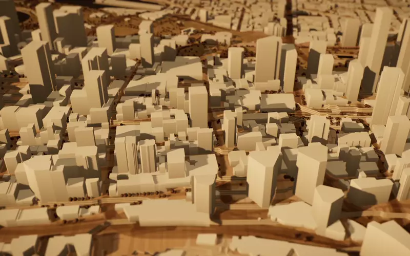
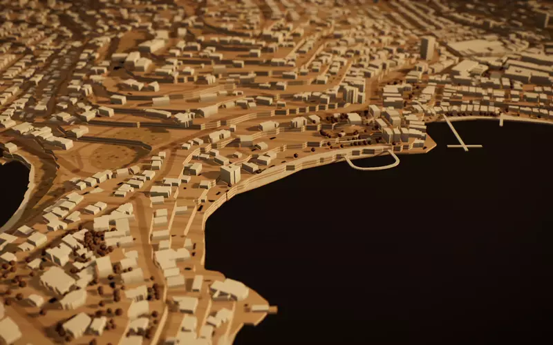
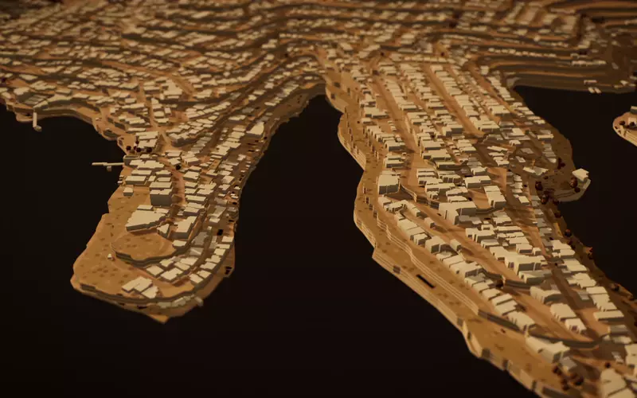
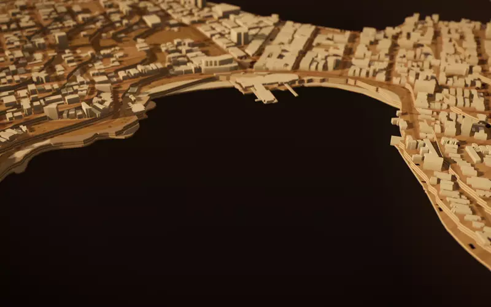

Joinery & shopfitting · Since 2001
Made in St Peters. Fitted across Sydney.
Bespoke kitchens, wardrobes and vanities for Sydney homes, and fitouts for the shops and offices that trade here. Designed, CNC-cut and installed by one team.
Real Sydney streets, modelled from open map data. Data credits
2001
Building for Sydney since 2001, from Addison Road to our St Peters workshop.
In‑house CNC
Panels, components and signage machined in our own workshop.
Homes & business
Residential joinery and commercial fitouts, from one vanity to hundreds of apartments.
Design to install
Drawings, fabrication, installation and handover, managed by one team.
What we build
Joinery for the way Sydney lives and works.
Every job starts as a drawing and leaves our workshop ready to install. One team looks after it from start to finish, whether it's a single vanity or a whole retail floor.
-
01
Kitchens & living joinery
Kitchens, butler’s pantries, laundries, studies and entertainment units, built around how you use the space. We do single rooms and full-house joinery packages for some of Sydney’s finest waterfront homes.
-
02
Wardrobes & vanities
Walk-in robes, built-ins and bathroom vanities made with the same precision as our kitchens. Finishes and hardware stay consistent from room to room.
-
03
Shopfitting & retail
Counters, display joinery, shelving and feature walls, planned around your opening date. Built in our workshop to keep time on site short.
-
04
Office & commercial fitouts
Reception desks, meeting rooms, kitchenettes and storage for workplaces. Commercial interior design and joinery come together as one managed fitout.
-
05
Multi-residential
Kitchens, robes and vanities for apartment projects, with the same quality from the first unit to the last. We can deliver a single unit or hundreds of apartments.
-
06
CNC routering & signage
In-house CNC routering for precise, repeatable panels and components, plus signage and graphics to finish a fitout properly.
Where we work
Our workshop is in St Peters. Our work is all over Sydney.
These are the areas in the flyover above. They’re the parts of Sydney we work in most, but not the limit. If your project is anywhere in Greater Sydney, get in touch.
-

Inner West
St Peters · Marrickville · Newtown · Sydenham
Home turf. It started on Addison Road in Marrickville, and our workshop is still just down the road.
-

Sydney CBD
CBD · Barangaroo · Darling Harbour · Pyrmont
Retail and office fitouts for the businesses at the centre of the city.
-

Eastern Suburbs
Double Bay · Point Piper · Rose Bay · Vaucluse
Full-house joinery for harbourside homes, where the detail really matters.
-

Lower North Shore
Mosman · Cremorne · Neutral Bay · Kirribilli
Kitchens, robes and vanities across the harbour’s north side.
-

Northern Beaches
Manly · Fairlight · Balgowlah · Queenscliff
Joinery built to handle coastal living.
-
Somewhere else in Sydney?
We regularly work beyond these five areas. Tell us where the project is and what it involves.
Ask about your area
How it works
From first measure to final handover.
-
1
Talk & measure
We start on site: how you’ll use the space, what it needs to hold, and the finishes you want.
-
2
Design & drawings
Shop drawings and material selections, so you sign off on exactly what gets built.
-
3
Made in St Peters
Components are CNC-cut and assembled in our workshop, then finished before they reach site.
-
4
Install & handover
Installed, adjusted and cleaned up, then we walk you through the finished work.
Why “Addison”?
It started on Addison Road.
Addison Joinery opened its doors on Addison Road, Marrickville, in 2001. The workshop has since moved to St Peters, but the name stayed.
We’re still a Sydney business building for Sydney. That means full-house joinery for some of the harbour’s finest homes, fitouts for retailers and offices, and joinery packages for apartment projects of every size.
We handle the whole job in-house: design, drawings, CNC machining, assembly and installation. You deal with the people doing the work from the first conversation to handover.
See recent work on InstagramStart a project
Tell us what you’re planning.
A kitchen, a whole house, a shop or an office. Send us the details and we’ll be in touch to arrange a time to talk.